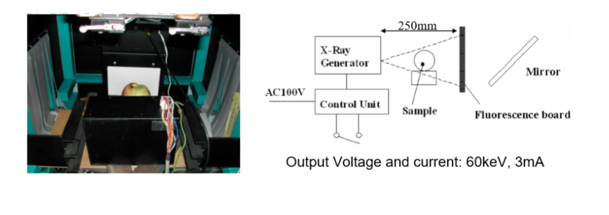
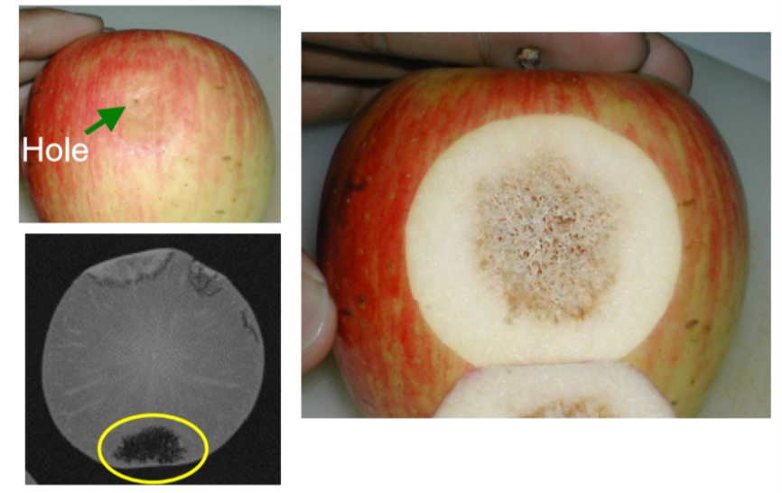
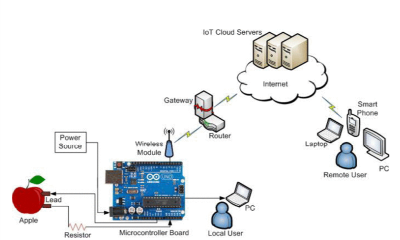

Research done by Y. Ogawa et al utilize the X-ray machine to detect the inner defect of fruits. The device used in the experiment is shown below. Both X-ray transmission images and X-ray CT images were analyzed by the author. 
 Based on the difference of normal texture of the fruit and the rotten core, high water content part, disease part and core eaten by insects, the desnsity of distribution will be different between different type of textures, therefore the image difference was able to be detected. An image set of apple are shown below illustrating the difference between normal texture and insect eaten texture.
Read the paper online Partha Pratim Ray et al use an IOT and Arduino framework to utilize the cloud based server to show the result to remote user. The fundamental fruit quality detection method used by them is to use a resistor and an Arduino board to check the amount of electric current that can pass a fruit. Based on the maturity of the fruit, the analog reading value of the Arduino board shows the "ripening index".
Read the paper onlineThese methods can provide stable results. However, expensive electronic devices are employed in these methods which will introduce more cost to the user of fruit grading system.